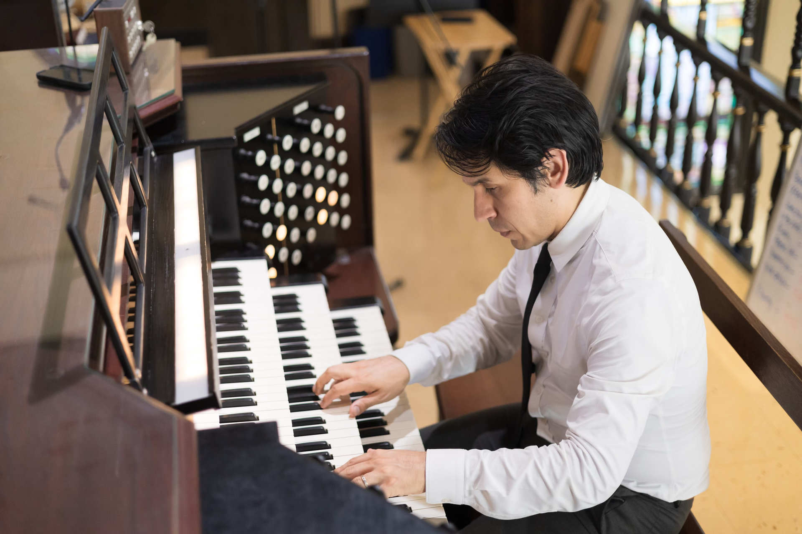
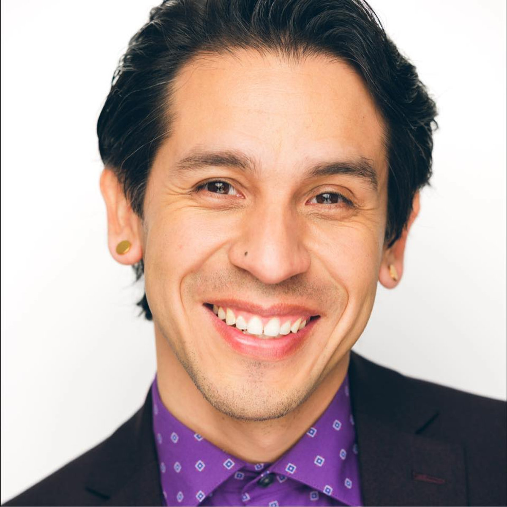

Published compositions
Choral music published by MusicSpoke and GIA Publications, with a focus on Latin American and indigenous composers.

Organist · Harpsichordist · Conductor
Director of Music & Organist, Holy Family Catholic Church, Glendale
University Organist, California Lutheran University
Watch & listen
Two recent performances, recorded at the organ — Bach and Widor.
Biography
Dr. Adán Alejándro Fernández is a versatile musician and educator — organist, harpsichordist, collaborative pianist, choral and orchestral conductor, composer, and writer. A dedicated liturgical musician, he serves as Director of Music and Organist at Holy Family Catholic Church in Glendale, California, where he has built a comprehensive music program: three adult choirs, a children’s choral academy, a handbell choir, and a chamber ensemble.
He is University Organist and a member of the piano faculty at California Lutheran University, where he mentors a studio of young organists and directs a recital series featuring international artists, including the monthly Afternoon Bach Recital Series. He also teaches music theory at the Colburn School in Los Angeles and performs as harpsichordist with Hortus Musicus, an early music consort.
As artistic director and founder of the Glendale Youth Symphony — a nonprofit supported by the Colburn Foundation — he leads young musicians in his community. His choral music is published by MusicSpoke and GIA Publications, with a focus on Latin American and indigenous composers. He holds degrees in organ and piano performance and a doctorate in sacred music from the University of Southern California.

Positions
Performances
Samuelson Chapel, California Lutheran University · Thousand Oaks, CA
Samuelson Chapel, California Lutheran University · Thousand Oaks, CA
Samuelson Chapel, California Lutheran University · Thousand Oaks, CA
Thayer Hall, The Colburn School · Los Angeles, CA
Samuelson Chapel, California Lutheran University · Thousand Oaks, CA
Samuelson Chapel, California Lutheran University · Thousand Oaks, CA
Cathedral of Our Lady of the Angels · Los Angeles, CA
Holy Family Catholic Church · Glendale, CA
Writing & scholarship
Published choral music and essays on worship, liturgy, and Latin American sacred music.
Choral music published by MusicSpoke and GIA Publications, with a focus on Latin American and indigenous composers.
Writing on worship, liturgy, composers, and theology in CrossAccent Journal, Religions, ChorTeach, and Reformed Worship.
Presentations on Latin American sacred music in Colombia, for the Hymn Society, and in London and Canada.
Contact
Concerts, teaching, and writing — each inquiry goes straight to him.
Organ and harpsichord recitals, conducting engagements, and festival appearances.
Inquire about a date →Organ and piano instruction, university residencies, and workshops for church musicians.
Ask about teaching →Commissions, essays, and lectures on liturgy and Latin American sacred music.
Start a conversation →Artist management: Seven Eight Artists